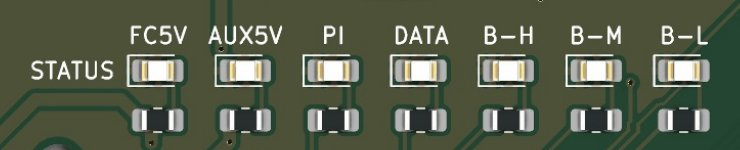

Firmware and software¶
The board needs ArduCopter on the Kakute (KakuteH7 target, 4.6 or newer), one Lua script on the FC's SD card, and two Python modules on the Pi. All files are in the project folder under maame/ardupilot and maame/pi.
Flight controller (ArduPilot)¶
Flash the KakuteH7 target, not KakuteH7v2: the V1.5 board has an SPA06 barometer that only the KakuteH7 build drives, from Copter 4.6. Flash arducopter_with_bl.hex over DFU with Betaflight Configurator (Mission Planner 1.3.76 cannot flash over DFU).
| Parameter | Value | Why |
|---|---|---|
| SERIAL1_PROTOCOL | 2 (MAVLink2) | Pi Zero on UART1 |
| SERIAL1_BAUD | 921 | 921600 baud to the Pi |
| SERIAL3_PROTOCOL | 23 (RCIN) | FS-iA10B iBUS on R3 |
| SERIAL4_PROTOCOL / BAUD | 2 / 57 | SiK radio on UART4 |
| SERIAL6_PROTOCOL | 5 (GPS) | TBS M10Q on UART6 |
| BRD_ALT_CONFIG | 1 | Makes R6/T6 a UART; without it the GPS is never found |
| RNGFND1_TYPE | 25 | TF-Luna on I2C (address 0x10) |
| SERVO5_FUNCTION | 28 (Gripper) | Payload servo on M5 |
| BATT_MONITOR | 4 | Tekko32 analog voltage + current |
| BATT_VOLT_MULT / BATT_AMP_PERVLT | 11.0 / 59.5 | KakuteH7 defaults for the Tekko32 sensors |
| SCR_ENABLE | 1 | Runs the arming-gate script |
| SCR_USER1 | 0 (1 = bypass) | Bypass the Pi gate for manual test flights |
| SCR_USER2 | 1 | Pi lost in flight: RTL from GUIDED, keep flying AUTO (0 = warn, 2 = RTL from AUTO too) |
Reboot the Kakute after changing the SERIAL and BRD_ALT_CONFIG values.
Arming gate (Lua)¶
maame_pi_gate.lua blocks arming until the Pi reports it is ready. Copy it to APM/scripts/ on the Kakute's SD card, and copy the modules/MAVLink/ folder to APM/scripts/modules/MAVLink/.
It listens for a HEARTBEAT from component 191 with status ACTIVE. If none arrives for 3 s, arming fails with "Pi companion not ready", and in flight it applies the SCR_USER2 action. A script error also keeps arming blocked.
Pi Zero¶
- Serial port: the Pi talks to the FC on
/dev/serial0(GPIO14 TXD, GPIO15 RXD) at 921600. Inraspi-configturn the serial login shell off and the serial port on. Adddtoverlay=disable-btto/boot/config.txtso the full PL011 UART is used; the mini UART drifts at this speed on a Pi Zero W. maame_ready.py: theCompanionLinkclass. It sends the heartbeat every 0.5 s (STANDBY untilset_ready(True), then ACTIVE), reads the FC's mode, andpilot_has_control()tells mission code to stop commanding when the pilot is not in GUIDED or AUTO. Needspymavlink.maame_leds.py: theStatusLedsclass drives the five Pi status LEDs from MAVLink data. Needsgpiozero.

| Pi GPIO | Label | Colour | Meaning |
|---|---|---|---|
| GPIO16 | PI | Green | Companion script running; blinks if the FC goes quiet for 3 s |
| GPIO20 | DATA | Yellow | Flashes on each MAVLink message in or out |
| GPIO19 | B-H | Green | Battery 50 % or more (or above 3.70 V per cell) |
| GPIO21 | B-M | Yellow | Battery 25 to 50 % (3.50 to 3.70 V per cell) |
| GPIO18 | B-L | Red | Battery low; flashes on the FC's low-battery failsafe |
All five LEDs are active high (GPIO, resistor, LED, GND). Those five GPIOs are taken; don't reuse them for anything else.
Minimal use:
from maame_ready import CompanionLink
from maame_leds import StatusLeds
link = CompanionLink("/dev/serial0", 921600, leds=StatusLeds())
link.wait_for_fc()
# ... run self-checks ...
link.set_ready(True)
while True:
link.tick()
if link.pilot_has_control():
continue # do not send commands
# ... mission logic ...